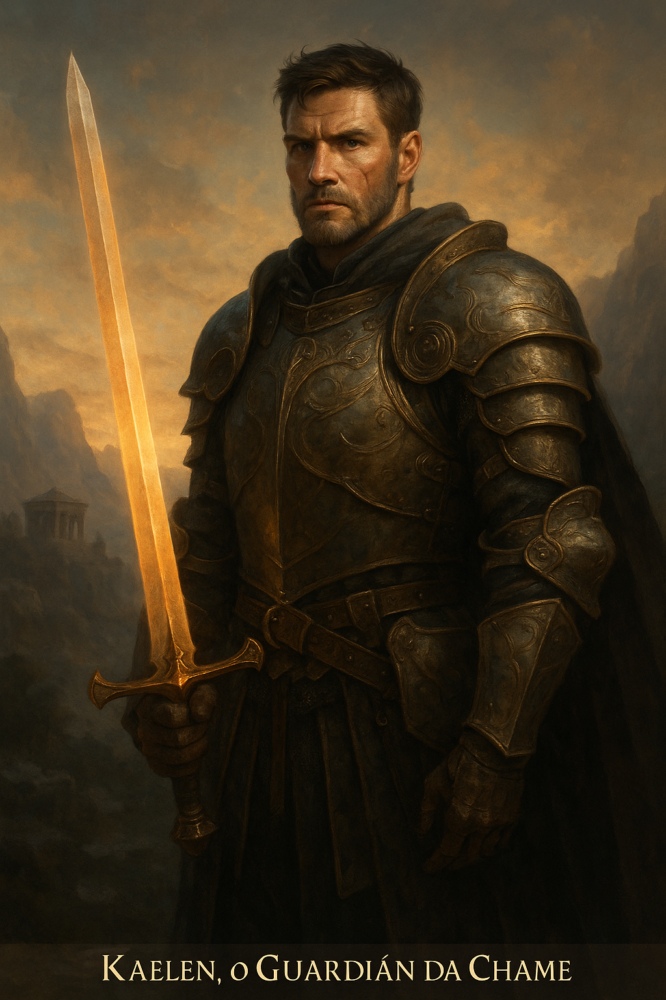

Kaelen
O Guardião da Chama Escondida
Um valente guerreiro que carrega a centelha da Chama Primordial, Kaelen jurou defender Aethelgard das sombras que ameaçam consumi-la. Sua coragem é tão ardente quanto o fogo que ele comanda.
Habilidades Principais:
- Golpe Solar Incandescente: Cega inimigos com luz pura.
- Barreira de Cinzas Protetora: Repele magias sombrias.
- Lâmina Consagrada: Ataques imbuidos com poder sagrado.